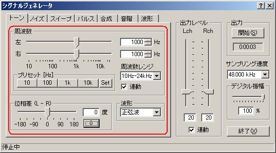
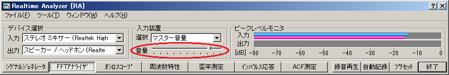
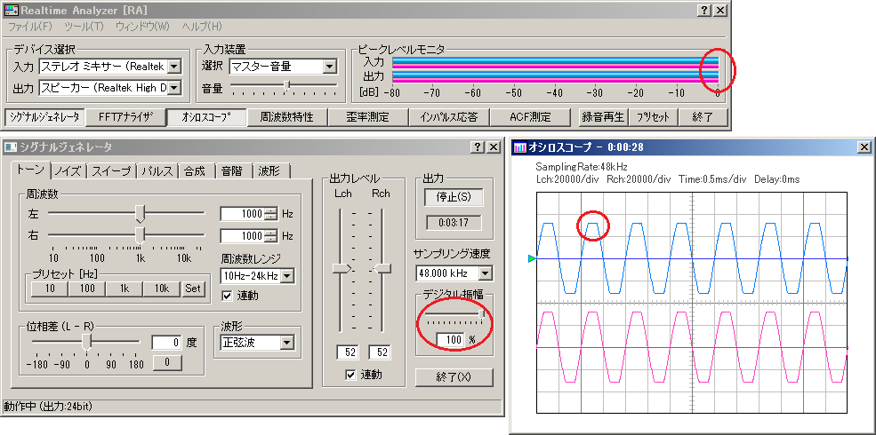
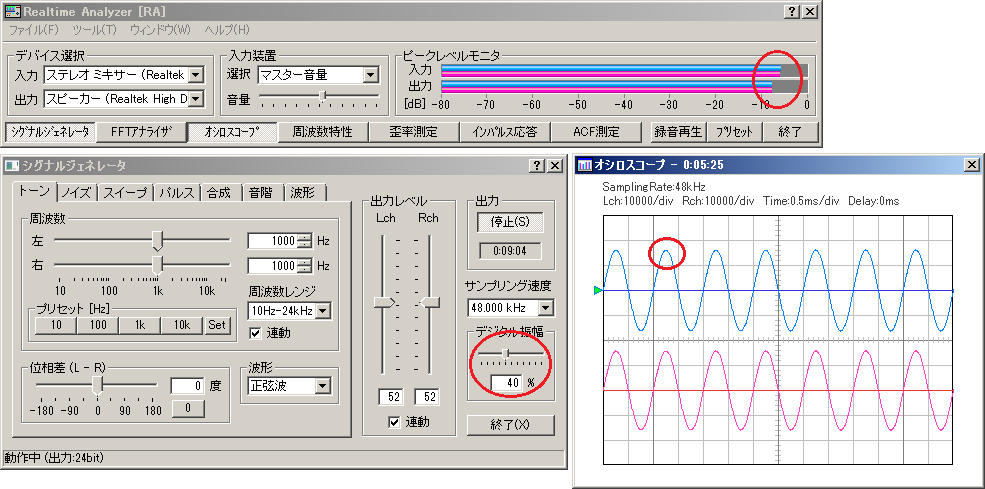

DSSF3 > RA > 操作マニュアル > 測定前の調整
シグナルジェネレータの出力レベル調整
この調整は、リアルタイムアナライザや、パソコンのサウンド回路を知るのに役立ちます。
デジタルボリュームを調整せずに使用すると、シグナルジェネレータが出力する信号が歪んでいることがあります。一番の原因は、D/Aコンバータに内蔵されているアナログアンプ（増幅回路）です。D/Aコンバータはデジタル信号（16ビットの場合1-32767の強度で表される）をアナログ信号に変換します。デジタルの最大値までアナログアンプの出力が歪まなければいいのですが、ボリュームを上げていくと上のほうが歪むケースがあります。
原因としては、第１に、サウンド回路の故障や、第２には、品質などが上げられます。第３には、サウンド回路が音楽用にパワー重視にしているかなどです。
D/Aコンバータに入る信号のレベルを調整するボリュームはデジタルボリュームと呼びます。シグナルジェネレータに付いている「デジタル振幅」がデジタルボリュームです。ボリュームを絞ることで、デジタルをアナログに変換後、増幅アンプが歪まないように調整できます。フルボリューム、全開で100%です。ボリュームの値は0%～100%の間で調節できます。ボリュームを絞ると、シグナルジェネレータは音響信号を自動圧縮して出力します。
D/Aコンバータの周波数特性（D/Aコンバータ後のアンプの歪み）を調べるためには、シグナルジェネレータ（以下、SGと表記）で正弦波を発生させてオシロスコープで信号を観測します。通常、1kHz近くの周波数を使用します。
最初は下図のように44KHzか48KHzを使用して下さい。理由は、多くのパソコンやサウンドボードのアナログアンプがそれ以上の周波数に対応していないためです。

ここでの入力装置指定は、オシロスコープのためのものです。SGからの入力ですからWAVEを選択します。ピークレベル表示を見て、過入力、入力不足にならないように入力装置のデバイス選択の下にある、スライド式の入力ボリュームを調整します。（ピーク時に-5dBくらいになるように調節してください）
この場合は、SGで作られたテスト信号は、D/Aコンバータを経由して、デジタルからアナログに変換され、アンプ増幅されて、ミキサーにはいります。そのデータをオシロスコープで分析することになります。

オシロスコープに表示される正弦波の山が四角く崩れている場合は信号が歪んでいることを意味します。この場合、歪む可能性があるのは、D/Aの問題、よくある問題としては増幅アンプ出力の歪と考えられます。この原因は、D/Aの品質や故障も考えられますが、過入力ということがよくあります。この場合はデジタルボリュームの調節で歪まないように調整可能です。
きれいな波形が表示されるまでボリューム（SGのデジタル振幅とメインウインドウの入力ボリューム）を調整してください。
RAL、RAD、RAEのオシロスコープでは高い周波数の波形が滑らかに表示できなため、高い周波数は使用しないように注意してください。


DSSF3 > RA > 操作マニュアル > 測定前の調整